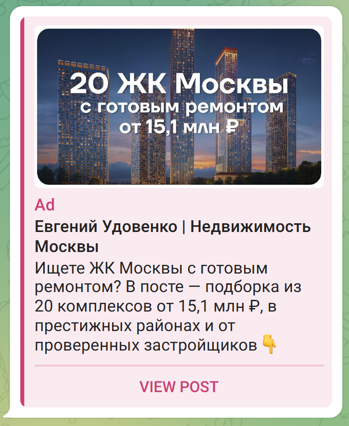
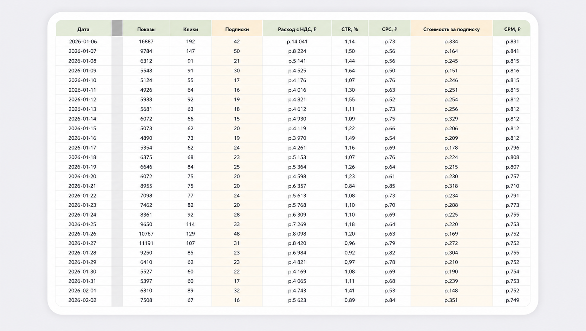

Ситуация и задача
Премиум-недвижимость в Москве — ниша, в которой классические performance-каналы перегреты, а аудитория не покупает квартиру за 15+ млн ₽ «с одного клика по объявлению». Здесь не работает реклама в лоб, и здесь не работает широкий охват.
Запустил Telegram Ads для канала агента, который ведёт клиентов на первичный рынок премиум- и делюкс-сегмента. Главная задача — увеличить число обращений в канал и нарастить базу целевой аудитории. Целевая метрика на старте — стоимость целевого подписчика до 400 ₽.
Этот кейс не о том, «как мы порвали рынок». Нам удалось попасть в стоимость подписчика для «дорогой» ниши с запасом — 323 ₽ против целевых 400 ₽.
Вводные данные

Воронка: каталог + бот вместо продающего поста
Оффером стал каталог новостроек на старте продаж от 15 млн ₽. Ценовая планка прямо в креативе работала как фильтр платёжеспособности: те, для кого 15 млн — не реалистичный диапазон, на рекламу просто не реагировали.
Показы настраивал исключительно на каналы по бизнес-, премиум- и делюкс-недвижимости в Москве. Широкие каналы про «недвижимость в целом», ипотеку, новостройки эконом- и комфорт-класса — не брал. В премиуме широкий охват — это слив бюджета.
Дизайн креативов
Использовал «Премиальный» визуальный стиль — тёмные тона, акцент на стартовых ценах и pre-sale, конкретная ценовая планка прямо в баннере («от 15 млн ₽», «в пределах МКАД»). Текст завершается прямым CTA «Скачать файл».
Креативы и подборки в этой нише выгорают за 1–2 недели — поэтому обновление визуала и оффера было плановой задачей, а не реакцией на проблему.


Аналитика и оптимизация
Решения по каналам и креативам принимались на еженедельной основе: добавлял новые каналы, отключал те, что давали дорогих или нерелевантных подписчиков, заменял выгорающие подборки.

Результаты
Хотите такой же результат?
Расскажите о своём проекте — разберу ситуацию и предложу стратегию
Написать в Telegram →